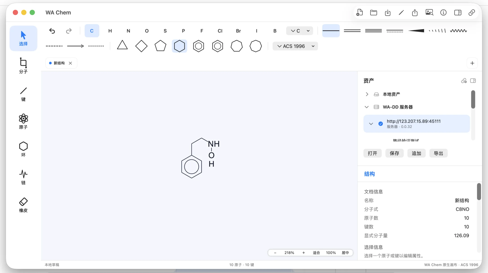
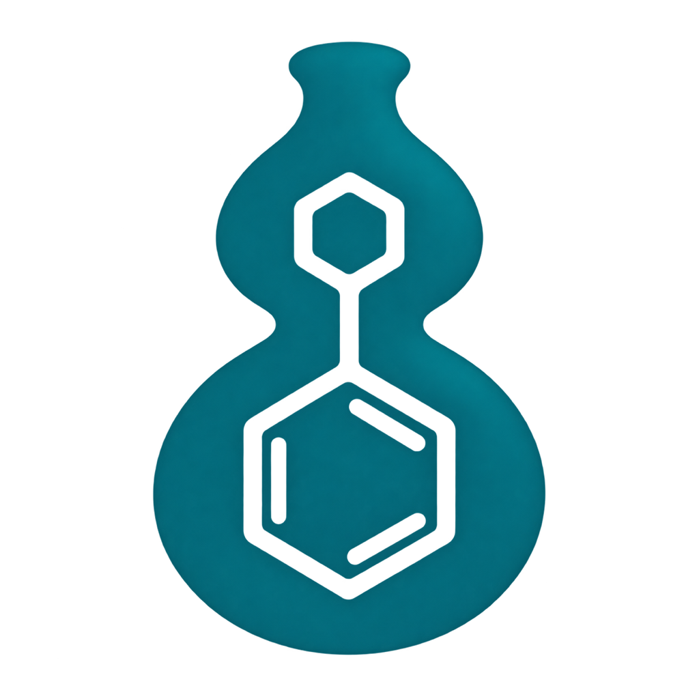
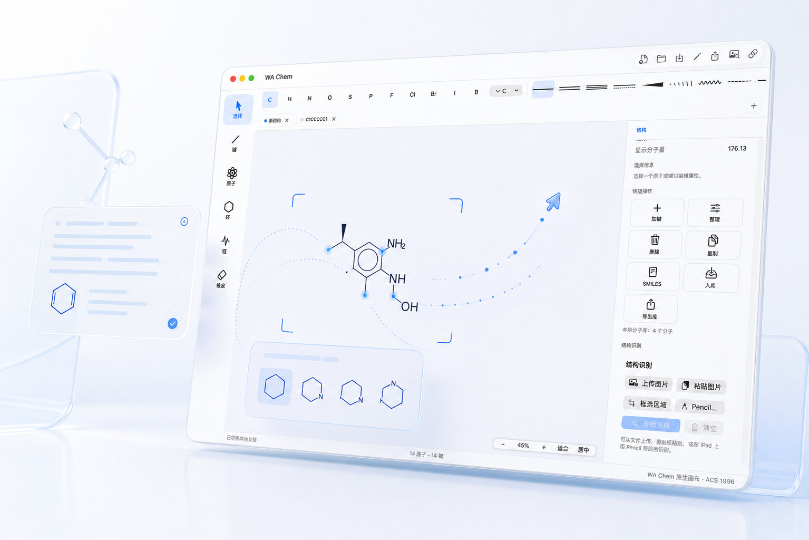

专注真实的绘制体验
熟悉的元素、键型和结构属性集中在同一工作区。Mac 原生界面已支持 ACS 1996 文档样式。
原生 SwiftUI + Metal
ACS 1996


WA Chem
围绕原子、键、环和选择建立低摩擦的编辑体验。
让截图、论文图片和手绘结构重新成为可编辑内容。
在同一工作区完成保存、格式导入导出与后续计算。
熟悉的元素、键型和结构属性集中在同一工作区。Mac 原生界面已支持 ACS 1996 文档样式。

模型在 Apple 设备本地运行，延续原生应用的数据与工作流体验。
模型由部署 WA Chem 的服务器运行，浏览器负责连接与操作。
从设备内的数据归属，到跨设备协作与资产组织，WA Chem 的产品逻辑为长期研究工作而设计。
结构与项目数据由你自行存储，并可通过 iCloud 在 Mac 与 iPad 间同步。
同一套 iPad 与 Mac 应用，纯 Apple 原生开发，不包含 JavaScript / TypeScript Web 运行层。
连接 WA-DD，在工作台中选择、编辑并管理配体结构。
围绕项目、资产与分子的关系深度优化，让查找、追加、保存与导出更清晰。